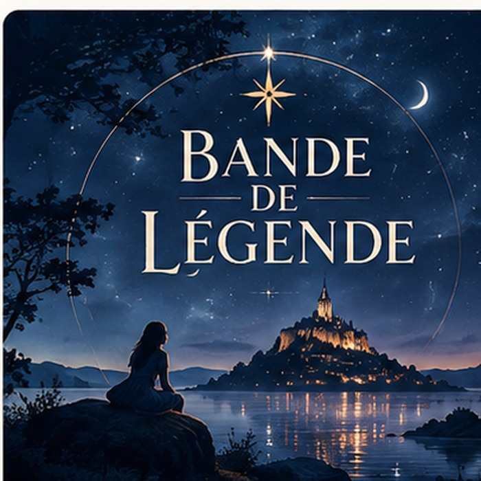

Nuit étoilé
Contes, légendes et récits populaires venus d'ici et d'ailleurs.
Bientôt disponiblePodcasts narratifs et documentaires audio
Des récits à explorer, une série après l’autre.

Contes, légendes et récits populaires venus d'ici et d'ailleurs.
Bientôt disponibleUn nouvel univers à découvrir prochainement.
Bientôt disponibleLa suite de l'aventure est en préparation.
Bientôt disponibleLes derniers récits à écouter
Les épisodes apparaîtront ici dès leur publication sur Acast.
Le prix d'un petit café pour que l'aventure continue ☕✨
Un petit geste qui fait toute la différence.
Faire un don →Pour soutenir l’aventure chaque mois.
6 €/mois S’abonner →